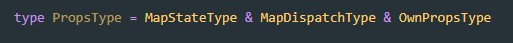

Допустим у нас есть обыкновенная функциональная компонента которая принимает пропсы и отрисовывает JSX
Первое что нам надо - это прописать типы для пропсов:

В TipeScript есть уже готовый тип (React.FC - functional component) для функциональных компонент который использует Generics для типизации пропсов. Вот как это выглядит:

Т.е. в качестве Generic мы указывает тип для пропсов
Допустим у нас есть обыкновенная компонента которую мы обернули в connect и которой через пропсы мы передаем данные из глобального state, а так же передаем Actions которые нам надо будет диспатчить

У нас стоит задача прописать типы у пропсов. Все пропсы мы можем разделить на три составляющие:
Пропишем типы каждого из учатска. Начнем с пропсов из mapStatetoProps
Далее вот так будет выглядетьтипизация объекта который вернуть должен mapDispatchoProps
И наконец указываем типы для собственных пропсов которые мы могли указать при вызове компоненты
Теперь нам надо создать основной глобальный тип созданный из этих трех типов. Делается это так:
Далее просто указываем тип у пропсов